Click in the header to sort the SNe based on this criterion
| HOST image | SN image | SN ID | class | z | Host ra | Host dec | SN ra | SN dec |
| 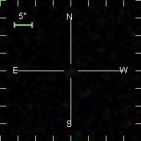 | 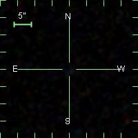 | 06D3ec | SNIb/c? | 0.284200 | 215.09409 | 52.350536 | 215.09428 | 52.350619 |
| 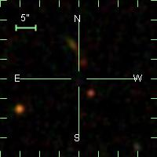 | 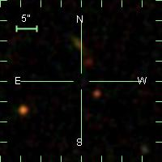 | 06D2bo | SNIb/c? | 0.825000 | 150.21871 | 2.0565334 | 150.21893 | 2.0563667 |
| 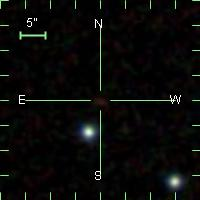 | 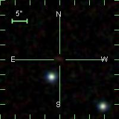 | 05D2og | SNIb/c? | 0.617000 | 150.14861 | 2.1279223 | 150.14850 | 2.1277556 |
| 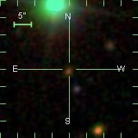 | 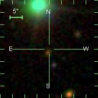 | 05D1kt | SNIb/c | 0.319000 | 36.702177 | -4.4128888 | 36.702121 | -4.4126944 |
| 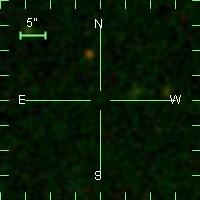 | 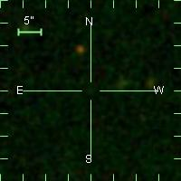 | 04D2jz | SNIb/c | 0.323800 | 150.08990 | 2.0088972 | 150.08987 | 2.0089250 |
| 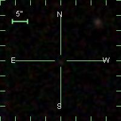 | 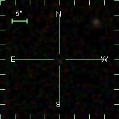 | 04D1la | SNIb/c | 0.319000 | 36.665883 | -4.8314278 | 36.665883 | -4.8314000 |
| | 04D4ew | SNIb/c? | 0.131000 | 333.74938 | -17.676403 | 333.74902 | -17.676042 |
| 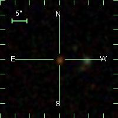 | 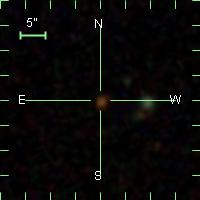 | 04D3ct | SNIb/c | 0.605000 | 214.17484 | 52.528678 | 214.17484 | 52.528650 |
| 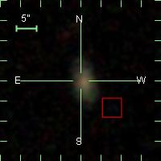 | 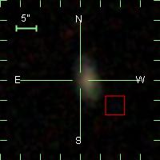 | 04D3bt | SNIb/c | 0.111000 | 214.24898 | 53.131067 | 214.24942 | 53.130956 |
| 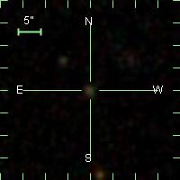 | 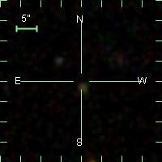 | 03D1fp | SNIIb | 0.270000 | 36.512637 | -4.1343111 | 36.512804 | -4.1338944 |
| 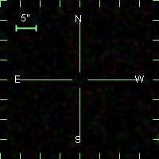 | 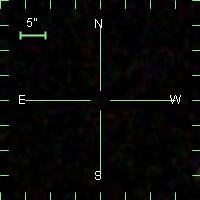 | 03D1cj | SNIb/c? | 0.364000 | 36.604504 | -4.2110528 | 36.604504 | -4.2110806 |